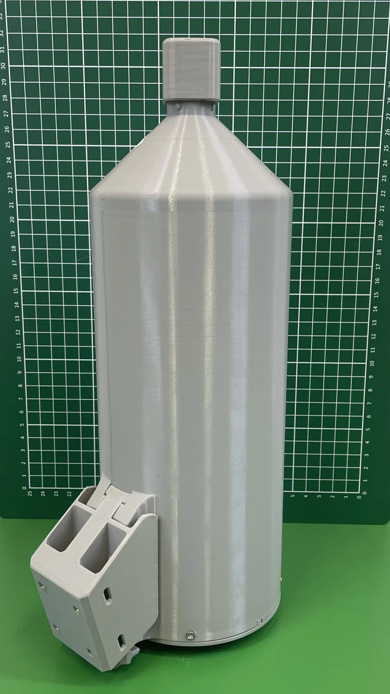
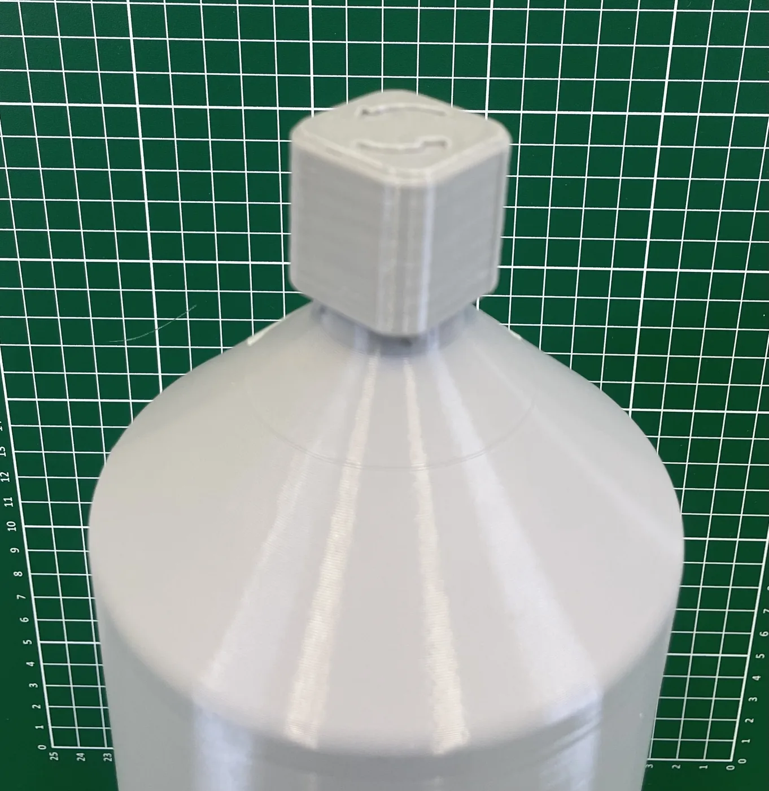
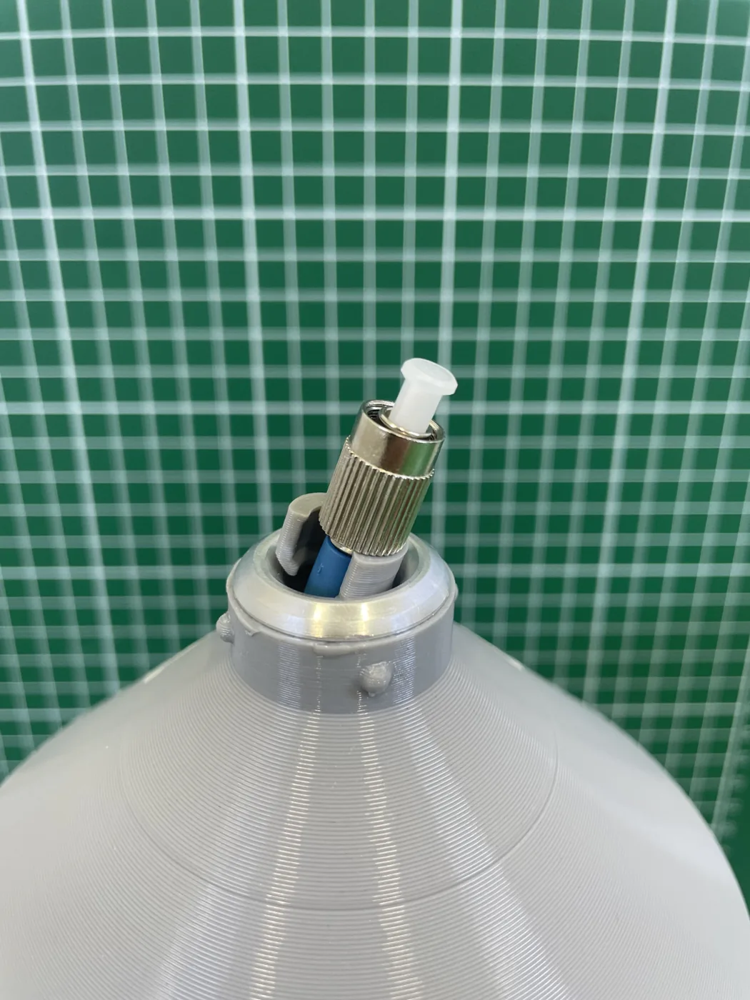
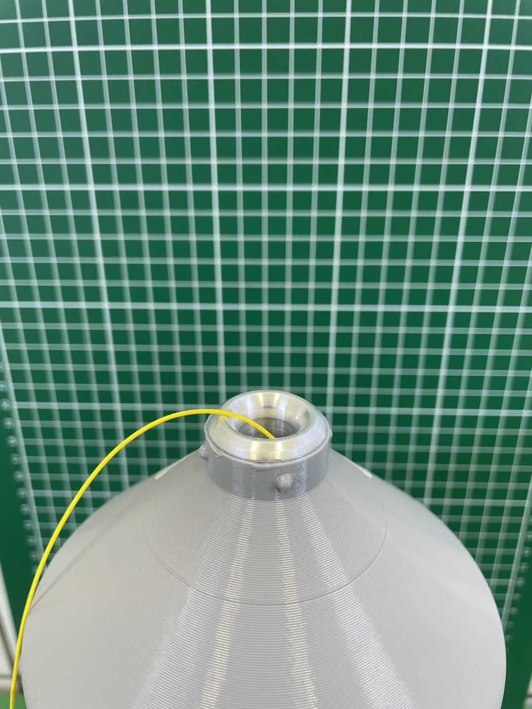
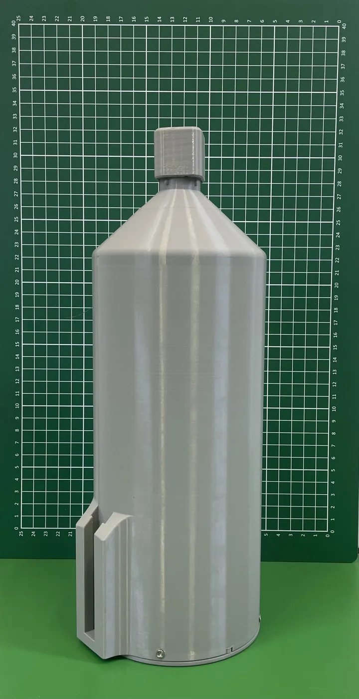
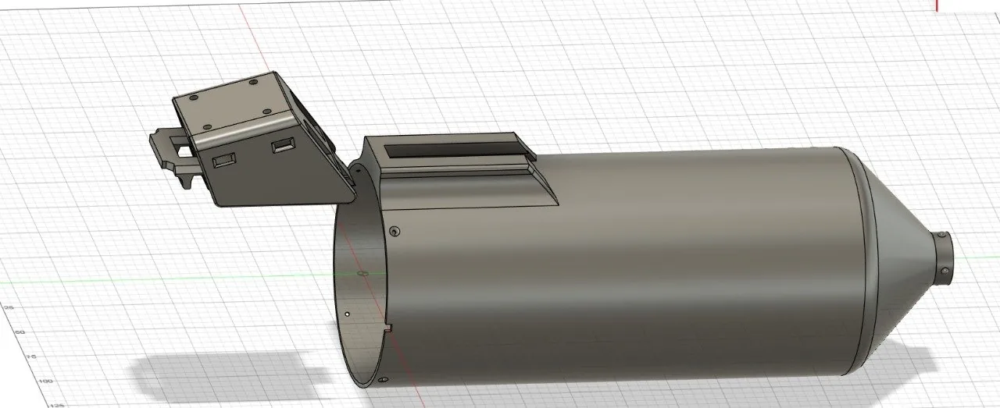

Порожниста самонесуча конструкція
Несучий елемент — сама структура намотування: звій тримає форму без шпулі. Стабільність без зайвої маси.
Виробництво
Оптоволокно, композити, полімерне лиття та електроніка на одній площадці в Європейському Союзі. Від сировини до протоколу якості — всередині компанії.
01 · Виробничі лінії
02 · Флагманський продукт · власне виробництво
Самонесуча прецизійна намотка без шпулі: менша маса, менший об’єм, реверсивне розгортання. Розроблено для тактичних волоконних ліній і мереж зв’язку, що розгортаються в польових умовах.

кришка twist-lock швидкознімне кріпленняМаса звою — без корпусу та модулів, маса в корпусі — без модулів; для 40 і 60 км корпус розробляється під замовлення. Проміжні довжини 15, 25, 35, 45, 50, 55 км — під замовлення. Фактична довжина кожного звою фіксується OTDR-сканером. Дані: специфікація SRT-SFC-30-K/2026 і КП від 03.09.2026.
Шпуля — це баласт: +15–20 % зайвої маси і −30 % корисного об’єму. Проблему знято на рівні геометрії виробу.
Несучий елемент — сама структура намотування: звій тримає форму без шпулі. Стабільність без зайвої маси.
Пошарове позиціювання волокна дає +40 % об’ємної ефективності проти традиційних методів намотування.
Точне позиціювання виключає мікровигини та локальні втрати сигналу по всій довжині.
Самонесуча геометрія захищає волокно від деформацій і тиску при транспортуванні та зберіганні.
Контрольоване розгортання та зворотне намотування — повторне використання лінії після передислокації.
Кожен звій після намотки: геометрія штангенциркулем, контроль маси, OTDR-рефлектометрія повної довжини.
03 · Оптичні характеристики та контроль якості
Кожен звій проходить OTDR-рефлектометрію повної довжини. Нижче — реальні рефлектограми зразків виробництва, не ілюстрації.
| Довжина хвилі | Ліміт ITU-T | Виміряно | Запас |
|---|---|---|---|
| 1310 нм | ≤ 0,40 дБ/км | 0,335 дБ/км | −16 % |
| 1550 нм | ≤ 0,20 дБ/км | 0,190 дБ/км | −5 % |
Випробування проведено на зразках власного виробництва, результати верифіковано лабораторним OTDR.
04 · Польовий корпус
PETG, 3D-друк; серійна версія — лиття під тиском на власних термопластавтоматах. Адаптація посадки під платформу замовника.
Відкривається за рельєфними стрілками без інструменту — швидкий доступ до виводу волокна.
Безшпульний звій у демпферному ложементі; волокно виходить через верхній конус.
Медіаконвертер і патчкорди в окремому відсіку; оптичний тракт — два патчкорди FC/UPC, зварні з’єднання у термоусадних гільзах.
Доступ до оптичного тракту без розбирання виробу.
Універсальне посадкове місце під різні платформи носія; знімається без інструменту.
3D-друк із PETG; базовий захист IP41, виконання IP67 — опція; адаптація під платформу замовника.





05 · Система в зборі · Sky + Ground station
Відео та керування одним волокном на відстань до 80 км в оптичному діапазоні 1310 / 1550 нм. Без радіосигнатури: нема що глушити чи пеленгувати.
Керування та відео по волокну: нульова радіосигнатура, не пеленгується, несприйнятливе до РЕБ.
«Командний пункт — позиція»: мала маса, швидка прокладка, реверсивне згортання для передислокації.
Керування НРК та відео по волокну там, де радіоканал придушено.
Радіус вигину 7,5 мм — щільні муфти та кроси на передових позиціях.
Прокладання у бліндажах, укриттях і вузьких технічних нішах.
Реверсивна намотка: згорнути лінію, перемістити, розгорнути знову.
06 · Оптоволоконна лінія
Лінія працює
| Позиція | Параметри |
|---|---|
| Намотувальні станції | власна конструкція · сервопривід · лічильник довжини · пневматичний притиск · огородження безпеки |
| Оправки Ø53 / Ø64 | сердечник Ø53 для 5–35 км · Ø64 для 40–60 км |
| 3D-друк корпусів | PETG · кришка twist-lock · опція IP67 |
| Контроль | Auto OTDR до 60 км · ваги · штангенциркуль |
07 · Композитні матеріали
Лінія з 23 одиниць обладнання: розкрій тканини, намотування труб, обмотка стрічкою з ЧПУ, печі полімеризації, безцентрове шліфування та прес для плит 1400 × 1200 мм. Під власні рами БпЛА та на замовлення — за кресленням клієнта.
Лінія в стадії запуску · 2026
| Позиція | Параметри |
|---|---|
| Розкрійний автомат тканини | ширина 1,2 м · 1800 × 2100 × 1540 мм |
| Трубонамотувальний 3-валковий | довжина 3,5 м |
| Станок обмотки стрічкою ЧПУ | 1,8 м та 3,5 м |
| Печі полімеризації | 1 × 1 × 2 м · 1 × 1 × 3,8 м |
| Прес для плит | плита 1400 × 1200 мм |
| Безцентрово-шліфувальний | MT1080A |
| Знімачі оправок · відрізний напівавтомат | 0,8 / 2 / 3 м · 1,6 м |
08 · Полімерне лиття під тиском
Два термопластавтомати Haitian MA3200 та MA3800 із 5-осьовими роботами знімання. Трилопатеві пропелери для важких FPV-платформ і VTOL у двох матеріалах; далі — корпуси звоїв оптоволокна.
Лінія працює
| r / R | 0,25 | 0,50 | 0,75 | кінець |
|---|---|---|---|---|
| хорда, мм |
| Позиція | Параметри |
|---|---|
| Термопластавтомат Haitian MA3200 | зусилля змикання 3 200 kN · прес-форма пропелера 10″ |
| Термопластавтомат Haitian MA3800 | зусилля змикання 3 800 kN · прес-форма пропелера 15″ |
| Роботи знімання | 5-осьові, 2 шт |
| Периферія | сушарки 2 шт · завантажувачі 2 шт · чиллер · термостати форм 2 шт · дробарка |
09 · Електроніка та SMT
Лінія поверхневого монтажу на площадці понад 2000 м² в ЄС: трафаретний друк пасти, SPI, встановлення компонентів, конвекційна пайка, AOI та рентген-контроль.
Проєкт у реалізації
Компоненти від 0201 до QFP / BGA. Запуск після введення площадки.
10 · Документи для замовника
Вимірювання виконуються на виробництві та фіксуються у журналі якості. Комплект проходить митницю і технічне приймання без додаткових запитів.
11 · Запит
Довжина звою, геометрія пропелера, розкрій листів — підготуємо пропозицію протягом робочого дня.